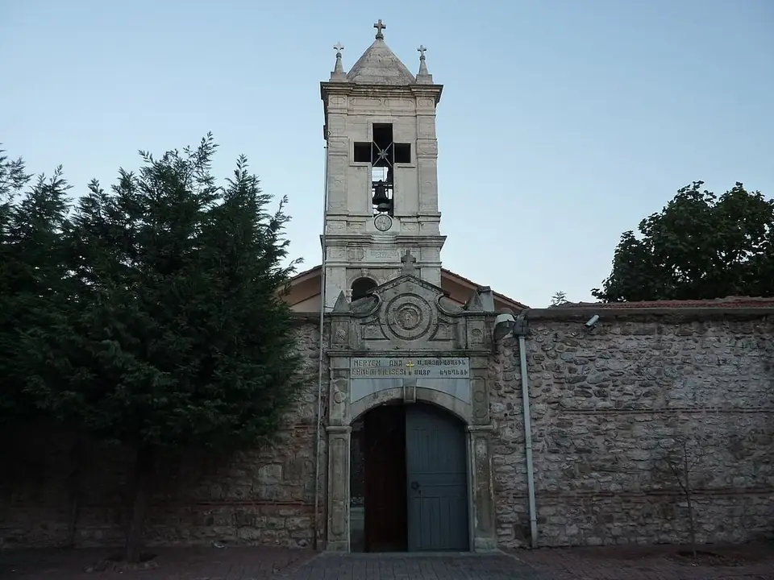

Kościoły, cmentarze i Jan Paweł II
Patriarchat Ormiański w Kumkapı – Jan Paweł II, 1979
Najmniej znany przystanek papieskiego szlaku: 29 listopada 1979 r. Jan Paweł II odwiedził tu ormiańskiego patriarchę Stambułu.


- Dzielnica
- Fatih
- Okres
- 1979
- Zwiedzanie
- Ograniczony dostęp
Historia
29 listopada 1979 roku papież z Polski przyjechał do Kumkapı, starej dzielnicy nad Morzem Marmara, by odwiedzić ormiańskiego patriarchę Stambułu.
Był to drugi dzień jedynej podróży Jana Pawła II do Turcji – dzień wypełniony spotkaniami z chrześcijanami różnych tradycji. Papież złożył wizytę patriarsze ekumenicznemu Dymitrowi I, przybył tutaj, do patriarchy Ormiańskiego Kościoła Apostolskiego, spotkał się ze wspólnotą Ormian katolików i odprawił mszę w katedrze Ducha Świętego.
Jak zwiedzać
Kościół patriarszy i biura patriarchatu stoją naprzeciw siebie przy tej samej ulicy w Kumkapı, kilkanaście minut pieszo od stacji Yenikapı (Marmaray i metro). Patriarchat jest czynnym urzędem kościelnym, a kościół otwiera się głównie na nabożeństwa – godziny sprawdź na miejscu, ubierz się skromnie i nie fotografuj podczas liturgii. Fasadę kościoła i bramę patriarchatu widać z ulicy. Nie znaleźliśmy tu tablicy upamiętniającej wizytę z 1979 r.
Postaci
- Jan Paweł II
- Dimitrios I
Położenie
Fatih, Stambuł · Współrzędne: 41.00444, 28.96149